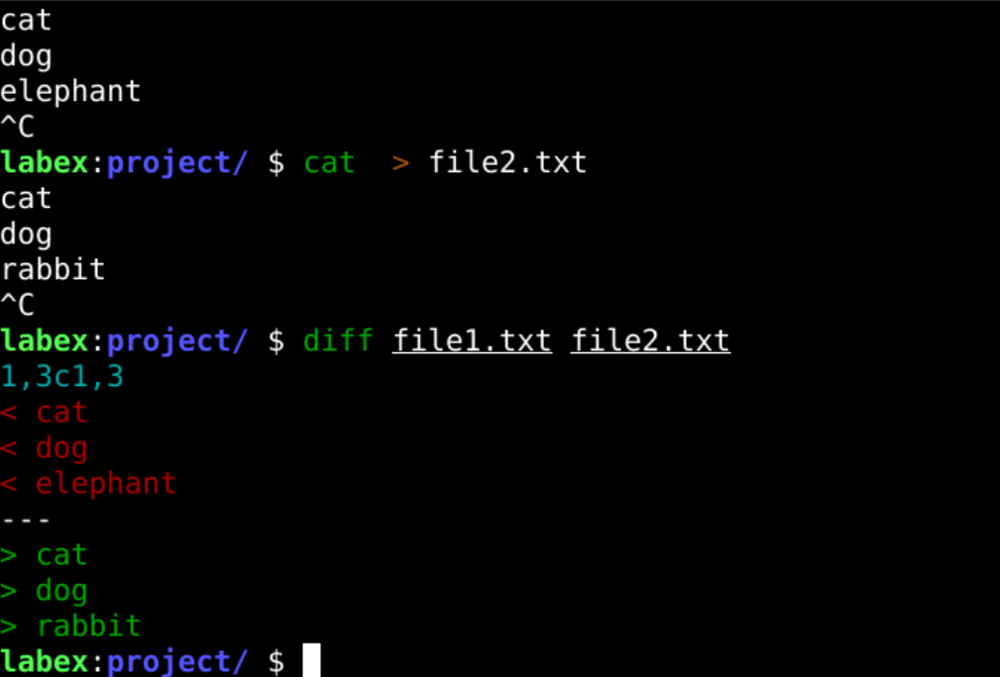

Overview
The diff command is used to compare the differences between two files line by line. It outputs the changes needed to make the files identical.
What Does DIFF Command Do?
The diff command is used to:
- Identify differences between two files.
- Create patch files to update one file to match another.
- Compare directories for file differences.
Common Use Cases
- Review changes in configuration files.
- Analyze differences between two versions of a file.
- Create patches for software updates.
Example
# Compare two files
diff file1.txt file2.txt
# Show differences in unified format
diff -u file1.txt file2.txt
# Compare directories
diff -r /dir1 /dir2Example Output

The image above shows an example of the output from the 'diff' command, displaying processes sorted by CPU usage.